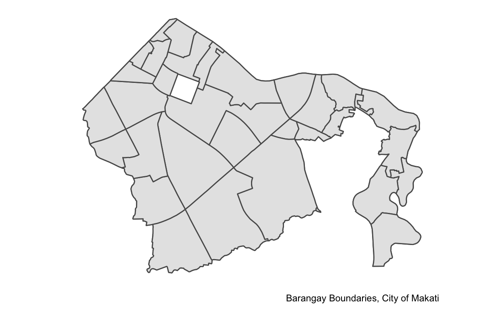
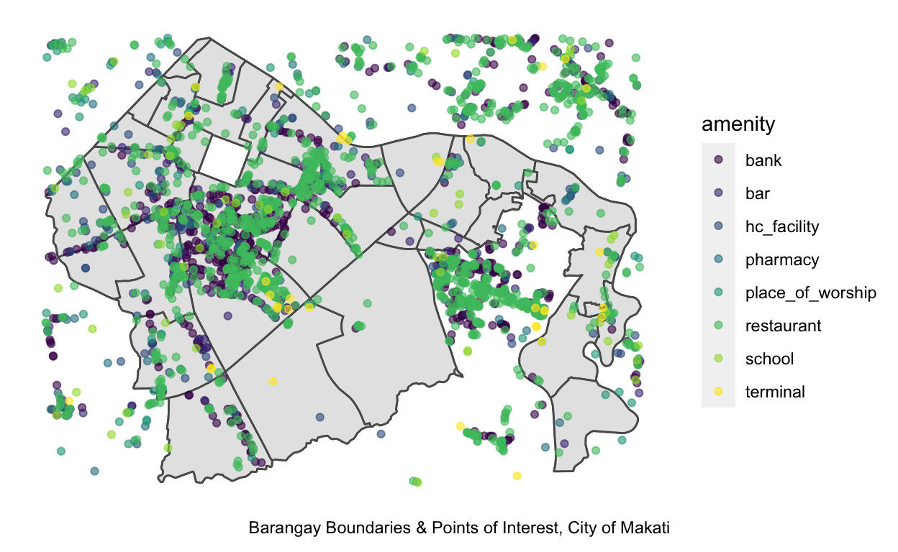
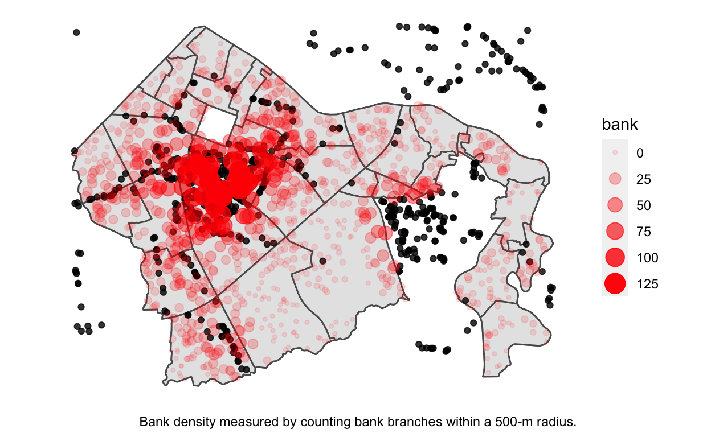
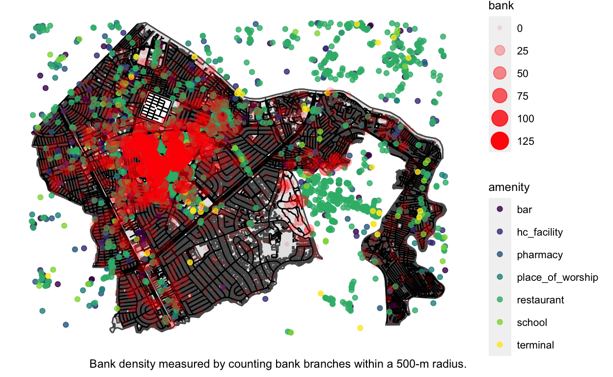

On accessing information from one of the largest repositories of (free) geospatial data.
OpenStreetMap is a platform for crowdsourcing geospatial information from basically anywhere volunteers are willing to go. This makes it one of the most powerful databases readily available to the public – contributors have been known to visit locations no single operator can reach (including Google). The database has use cases ranging from mapping far flung communities pre-calamity, to giving your Grab driver the best possible route.
Below I show just a very lightweight introduction for analysts looking to get their feet wet with OpenStreetMap’s API.
Make sure the following packages are installed:
tidyverse (Wickham et al. 2019) as a convenient collection of packages for data processing and analysis.targets (Landau 2021) as a pipeline toolkit for optimizing runtime.sf (Pebesma 2018) for processing simple features, a popular standard for storing geospatial information.osmdata (Padgham et al. 2017) as an interface for transacting with the OpenStreetMap database.Loading these packages immediately as they will be useful throughout. Notice also that we are clearing out any possible obsolete targets from previous runs (this is best practice when using targets).
We set up the global environment for our pipeline. We set seed to guarantee reproducibility of some random sampling we are doing later on. This is different from the packages we just loaded in the sense that our targets exist in a separate environment.
Loading sf objects tends to be a heavy process. We make extensive use of the targets framework to make sure code only runs if the chunk (or something upstream of it) changes. Absent of this, outputs are neatly stored as binaries, and accessed when needed.
Once you are set up, we can start querying! All OSM queries start with what’s called a bounding box. This tells your query what the area of interest is – think of it like us cropping a blank canvas the size of the world map.
OpenStreetMap data is served up by the Overpass API. We initialize a query to this API by giving opq() a bounding box and features we want to be found on our canvas. For our case, we are interested in administrative boundaries, roads, buildings, and amenities.
list(
tar_target(
city.ql, study_region.bb %>% opq() %>%
add_osm_feature(key = "admin_level", value = "6")
),
tar_target(
boundary.ql, study_region.bb %>% opq() %>%
add_osm_feature(key = "admin_level", value = "10")
),
tar_target(
road.ql, study_region.bb %>% opq() %>%
add_osm_feature(key = "highway")
),
tar_target(
building.ql, study_region.bb %>% opq() %>%
add_osm_feature(key = "building")
),
tar_target(
amenity.ql, study_region.bb %>% opq() %>%
add_osm_feature(key = "amenity")
)
)There is a wealth of other features you can add to your query – the keys for these can be conveniently found on the OpenStreetMap wiki.
sf ObjectsQueries are just instructions. We execute these using osmdata_sf(). trim_osmdata(), meanwhile, is a handy way to retain only the sf objects that can be found within the study region’s polygon.
list(
tar_target(
city.sf, city.ql %>% osmdata_sf() %>% trim_osmdata(study_region.bb)
),
tar_target(
boundary.sf, boundary.ql %>% osmdata_sf() %>% trim_osmdata(study_region.bb)
),
tar_target(
road.sf, road.ql %>% osmdata_sf() %>% trim_osmdata(study_region.bb)
),
tar_target(
building.sf, building.ql %>% osmdata_sf() %>% trim_osmdata(study_region.bb)
),
tar_target(
amenity.sf, amenity.ql %>% osmdata_sf()
)
)We keep all the amenities here as this will become useful to our visualizations later.
tar_make()
ggplot() +
geom_sf(data = tar_read(city.sf) %$% osm_multipolygons) +
geom_sf(data = tar_read(boundary.sf) %$% osm_multipolygons) +
theme(
legend.position = "none",
panel.grid = element_blank(),
axis.title = element_blank(),
axis.text = element_blank(),
axis.ticks = element_blank(),
panel.background = element_blank()
) + labs(caption = "Barangay Boundaries, City of Makati")

We perform some data munging to classify important points of interest into tighter categories. You will notice we wrangle sf objects almost exactly as we would a dataframe. That’s because it is one! Just with special properties.
tar_make()
Here, amenity.sf contains various geometries (denoted by the prefix osm_) inside it – think of them like layers of objects on our canvas.
Length Class Mode
bbox 1 -none- character
overpass_call 1 -none- character
meta 3 -none- list
osm_points 259 sf list
osm_lines 201 sf list
osm_polygons 201 sf list
osm_multilines 0 -none- NULL
osm_multipolygons 49 sf list list(
tar_target(
amenity_point.sf, amenity.sf$osm_points %>%
transmute(
amenity = case_when(
amenity == "bank" ~ "bank",
amenity %in% c("restaurant", "fast_food") ~ "restaurant",
amenity %in% c("bar", "pub", "gambling", "nightclub", "casino") ~ "bar",
amenity %in% c("bus_station", "taxi", "ferry_terminal") ~ "terminal",
amenity %in% c("clinic", "hospital", "doctors", "dentist") ~ "hc_facility",
amenity == "pharmacy" ~ "pharmacy",
amenity %in% c("school", "college") ~ "school",
amenity == "place_of_worship" ~ "place_of_worship",
TRUE ~ NA_character_
), value = TRUE
) %>% mutate(amenity_key = amenity) %>%
filter(!is.na(amenity)) %>% spread(key = amenity_key, value = value, fill = FALSE)
)
)| amenity | bank | bar | hc_facility | pharmacy | place_of_worship | restaurant | school | terminal | geometry |
|---|---|---|---|---|---|---|---|---|---|
| bank | TRUE | FALSE | FALSE | FALSE | FALSE | FALSE | FALSE | FALSE | c(120.9995315, 14.5378517) |
| bank | TRUE | FALSE | FALSE | FALSE | FALSE | FALSE | FALSE | FALSE | c(121.0130289, 14.5601584) |
| bank | TRUE | FALSE | FALSE | FALSE | FALSE | FALSE | FALSE | FALSE | c(121.0047117, 14.5562959) |
| bank | TRUE | FALSE | FALSE | FALSE | FALSE | FALSE | FALSE | FALSE | c(121.0102058, 14.5593578) |
| bank | TRUE | FALSE | FALSE | FALSE | FALSE | FALSE | FALSE | FALSE | c(121.0243357, 14.5580425) |
Putting our sf’s together, we get a map of Makati’s points of interest.
ggplot() +
geom_sf(data = tar_read(city.sf) %$% osm_multipolygons) +
geom_sf(data = tar_read(boundary.sf) %$% osm_multipolygons) +
geom_sf(data = tar_read(amenity_point.sf),
aes(group = amenity, colour = amenity), alpha = 0.6) +
theme(
legend.position = "right",
panel.grid = element_blank(),
axis.title = element_blank(),
axis.text = element_blank(),
axis.ticks = element_blank(),
panel.background = element_blank()
) + labs(caption = "Barangay Boundaries & Points of Interest, City of Makati") +
scale_colour_viridis_d()

Something we may be interested in doing is generating random samples on our study region. I sample 1000 below. I also make a point of only sampling within the city’s boundaries (you can do this for other objects, like only sampling within buildings).
Through aggregate, something cool you can also do is to compute parameters of interest within a radius of our sampled points. Here, I get a simple count of all establishments within 500m of each sample.
list(
tar_target(
mc_point.sf, st_as_sf(st_sample(city.sf$osm_multipolygons, 1000))
),
tar_target(
mc_point_params.sf, aggregate(
amenity_point.sf,
mc_point.sf,
FUN = function(x) sum(as.logical(x), na.rm = TRUE),
join = function(x, y) st_is_within_distance(x, y, dist = 500)
) %>% filter(!is.na(amenity))
)
)If you’re having a hard time grasping what is happening, a neat way of thinking about is amenity_point.sf is your raw data, and it is “pinched” at points mc_point.sf to compress all raw data within the radius into just mc_points.sf’s points. Therefore, expect just 1000 rows in your dataframe.
tar_make()
Here’s the graph of data transformations we just created, in case targets is starting to get a bit overwhelming!
We’ve already snuck in some plots above, but let’s go even further here.
building.sf <- tar_read(building.sf)
city.sf <- tar_read(city.sf)
boundary.sf <- tar_read(boundary.sf)
road.sf <- tar_read(road.sf)
amenity_point.sf <- tar_read(amenity_point.sf)
mc_point_params.sf <- tar_read(mc_point_params.sf)
ggplot() +
geom_sf(data = city.sf %$% osm_multipolygons) +
geom_sf(data = boundary.sf %$% osm_multipolygons) +
geom_sf(data = amenity_point.sf %>% filter(bank), alpha = 0.8) +
geom_sf(data = mc_point_params.sf,
aes(alpha = bank, size = bank), col = "red") +
theme(
legend.position = "right",
panel.grid = element_blank(),
axis.title = element_blank(),
axis.text = element_blank(),
axis.ticks = element_blank(),
panel.background = element_blank()
) +
scale_colour_viridis_d() +
labs(
caption = "Bank density measured by counting bank branches within a 500-m radius."
)

Notice above that our aggregated parameters are also counting banks outside the study region. This is a method of edge correction to make sure we capture reality, despite administrative boundaries. Imagine us trimming these points of interest prematurely – we would have concluded that points around Taguig’s boundary had little exposure to banks (which we all know is wrong).
Putting it all together, we get this pretty cool plot.
ggplot() +
geom_sf(data = city.sf %$% osm_multipolygons) +
geom_sf(data = boundary.sf %$% osm_multipolygons) +
geom_sf(data = building.sf$osm_polygons) +
geom_sf(data = road.sf$osm_lines) +
geom_sf(data = amenity_point.sf %>% filter(!bank),
aes(group = amenity, colour = amenity),
alpha = 0.8) +
geom_sf(data = mc_point_params.sf,
aes(alpha = bank, size = bank), col = "red") +
theme(
legend.position = "right",
legend.title = element_text(size = 9),
legend.text = element_text(size = 8),
panel.grid = element_blank(),
axis.title = element_blank(),
axis.text = element_blank(),
axis.ticks = element_blank(),
panel.background = element_blank()
) +
scale_colour_viridis_d() +
labs(
caption = "Bank density measured by counting bank branches within a 500-m radius."
)

Now it’s possible to see patterns – banks seem to be clustering around that long highway on the left; banks and other points of interest seem to co-locate; there is definitely some spatial autocorrelation; etc.
We won’t cover spatial statistics here, but this should give you enough to go on!
If you found this useful or would like to collaborate with me, feel free to reach out at linolicuanan@gmail.com. For citing this article, use the BibTeX found below.
Landau, William Michael. 2021. “The Targets R Package: A Dynamic Make-Like Function-Oriented Pipeline Toolkit for Reproducibility and High-Performance Computing.” Journal of Open Source Software 6 (57): 2959. https://doi.org/10.21105/joss.02959.
Padgham, Mark, Bob Rudis, Robin Lovelace, and Maëlle Salmon. 2017. “Osmdata.” The Journal of Open Source Software 2 (14). https://doi.org/10.21105/joss.00305.
Pebesma, Edzer. 2018. “Simple Features for R: Standardized Support for Spatial Vector Data.” The R Journal 10 (1): 439–46. https://doi.org/10.32614/RJ-2018-009.
Wickham, Hadley, Mara Averick, Jennifer Bryan, Winston Chang, Lucy D’Agostino McGowan, Romain François, Garrett Grolemund, et al. 2019. “Welcome to the tidyverse.” Journal of Open Source Software 4 (43): 1686. https://doi.org/10.21105/joss.01686.
For attribution, please cite this work as
Licuanan (2022, Feb. 3). lino licuanan: Demystifying OpenStreetMap Data. Retrieved from https://lmlicuanan.github.io/posts/2022-02-03-demystifying-openstreetmap-data/
BibTeX citation
@misc{licuanan2022demystifying,
author = {Licuanan, Lino},
title = {lino licuanan: Demystifying OpenStreetMap Data},
url = {https://lmlicuanan.github.io/posts/2022-02-03-demystifying-openstreetmap-data/},
year = {2022}
}